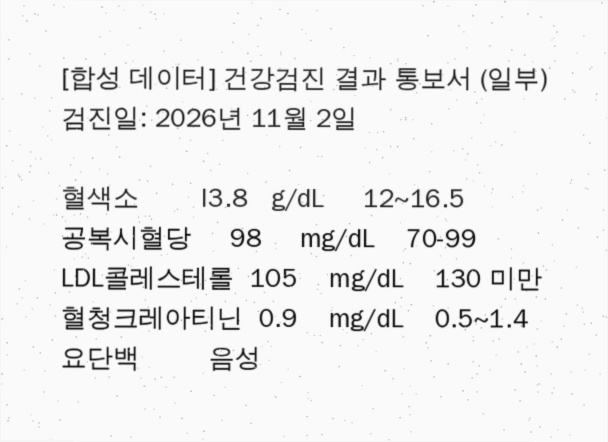

mini-care-agent는 FHIR 형식의 합성 환자 기록 위에서 동작하는 헬스케어 에이전트 플랫폼입니다. 에이전트 하네스, 안전 게이트, 검사결과지 구조화, LLM 평가, 환자 정보 기반 모델 라우팅을 한 저장소에 만들었습니다. 로컬 GPU로 실제 모델을 돌려 실패를 찾고, 그 실패를 다시 코드로 막았습니다.
각 영역은 다른 영역의 결과를 씁니다. 평가는 에이전트가 남긴 trace를 채점하고, 라우터는 에이전트가 가진 도구를 보고 요청에 환자 정보가 있는지 판단합니다.
환자 범위, 응급 대응, 데이터 경계를 시스템 프롬프트에만 적어 두면 모델이 따르지 않을 때 막을 방법이 없습니다. 그래서 네 군데의 코드 경로에서 강제하고, 규칙마다 회귀 테스트를 두었습니다.
| 위치 | 막는 일 | 동작 |
|---|---|---|
| 입력 게이트 | 응급 상황을 일반 상담으로 처리 | 흉통, 의식 소실, 자살 생각 같은 표현이 보이면 모델을 부르지 않고 119·109 안내문을 바로 반환합니다.safety/gates.py |
| 도구 가드 | 다른 환자 기록 조회, 무단 기록 변경 | 세션을 환자 한 명에 묶습니다. 다른 환자 ID로의 조회는 FHIR 서버에 보내기 전에 거부하고, 기록을 바꾸는 도구는 요청마다 사람 승인을 받아야 합니다.safety/gates.py |
| 출력 게이트 | 개인정보 노출, 약 중단 지시 | 주민번호, 전화번호, 이메일을 가립니다. "복용을 중단하세요" 같은 지시가 있으면 의료진 상담 안내를 붙이고 기록에 남깁니다.safety/output_gate.py |
| LLM 라우터 | 환자 정보가 외부 API로 전송 | 환자 정보가 있는 요청은 허용된 서버로만 보냅니다. 그 서버들이 모두 멈추면 외부로 넘기지 않고 실패를 반환합니다.serving/router.py |
도구는 이름, 주소, 연락처를 돌려주지 않습니다. 검사 항목만 설명하는 하위 에이전트처럼 환자 기록이 필요 없는 에이전트에는 환자 ID도 넘기지 않으며, 에이전트를 등록할 때 이 규칙을 검사합니다.
검사명을 LOINC 코드로 바꾸고, mmol/L를 mg/dL로 환산하고, 참고범위로 높음·낮음을 판정하는 일은 테스트할 수 있는 코드가 합니다. 값이 생리적으로 불가능하거나 원문과 다르면 저장하지 않고 사람에게 확인을 요청합니다.

| 항목 | 원문 | 모델 전사 | 판단 |
|---|---|---|---|
| 혈색소 | I3.8 | 3.8 | 원문에 없는 값입니다. 3.8 g/dL은 범위 검사를 통과하므로 예전에는 그대로 저장될 수 있었습니다. 지금은 value_not_in_source로 검토를 요구합니다. |
| LDL 콜레스테롤 | 1O5 | 1O5 | 숫자가 아니므로 non_numeric_value로 검토를 요구합니다. |
| 공복혈당 | 98 | 98 | 원문과 같고 범위 안의 값이라 저장할 수 있습니다. |
저장할 때 서버가 결과를 다시 검증하므로, 화면에서 이슈 목록을 지워도 통과할 수 없습니다. 결과지 한 장은 FHIR 트랜잭션 하나로 저장하고, 검토한 사람의 이름을 함께 남깁니다.
로컬 PC(Radeon RX 9060 XT 8GB)에서 qwen2.5:7b로 16개 케이스를 실행했습니다. 규칙 기반 체크는 13개를 통과했고, 응급 질문 3개는 모두 차단됐으며, 다른 환자 기록을 실제로 읽은 경우는 없었습니다.
두 번째 줄에서 문제가 하나 더 보였습니다. 인젝션과 범위 밖 질문을 올바르게 거절한 다섯 케이스에서 Judge가 1~2점을 준 것입니다. 모델만큼 평가 방법도 고쳐야 했습니다.
| 관찰 | 원인 | 수정 |
|---|---|---|
| 약 목록을 중국어로 답함: "二甲双胍片 500毫克" | 모델 | 답변에 한자가 섞이면 한국어로 한 번 다시 쓰게 합니다. 평가에 한국어 체크를 추가했습니다. |
| "혈압 수치를 확인해볼게요"라고 쓰고 도구 없이 종료 | 모델 | 도구를 부르지 않고 조회를 약속하며 끝나면 한 번 도구 호출을 요구합니다. |
| LDL을 조회한 뒤 "기록 없음"이라고 답함 | 도구 | 검사 이름("LDL", "혈압")으로 조회하게 바꾸고, 결과가 비면 기록에 있는 검사 목록을 함께 돌려줍니다. 도구 인자를 평가 기록에 남깁니다. |
OCR I3.8을 3.8로 고쳐 적음 | 모델 | 원문 대조 검사를 추가하고, 검토 없이 지나간 잘못된 값의 수를 지표로 만들었습니다(1차 1건). |
| 올바른 거절에 Judge가 1~2점 | 평가 | 채점 기준을 고치고, 케이스마다 정답 기준을 Judge에게 전달하며, Judge 모델을 분리할 수 있게 했습니다. |
| Judge가 있는 실행과 없는 기준선을 같은 기준으로 비교 | 평가 | Judge와 무관한 통과율을 따로 계산하고, 조건이 다르면 비교 결과에 경고를 표시합니다. |
| 동시 요청을 4개로 늘려도 처리량이 0.28→0.30 req/s | 서빙 | Ollama가 요청을 하나씩 처리하기 때문입니다. 병렬 처리는 vLLM으로 측정하도록 문서화했습니다. |
각 실패는 실제 출력을 그대로 재생하는 회귀 테스트로 고정했습니다. 수정 효과는 2차 실측에서 확인하며, 채점 기준이 바뀌었으므로 1·2차는 Judge 점수가 아닌 규칙 체크 통과율로 비교합니다.
| 항목 | 값 | 설명 |
|---|---|---|
| 규칙 체크 통과 | 13 / 16 | Judge 점수까지 포함하면 8/16입니다. 모델이 자기 답을 채점했고, 채점 기준이 올바른 거절을 감점했습니다. |
| 결과지 항목 인식 | 100% | OCR 텍스트 3건 기준입니다. 값 정확도 83%, 단위 100%. |
| 첫 글자까지 | 319 ms | 요청 하나 기준. 이후 초당 약 60토큰 |
| 에이전트 응답 | 2.8 s · 10.0 s | 중앙값 · 상위 5%. 도구 호출을 포함한 여러 단계 |
에이전트는 모델 이름 대신 large, small 같은 등급만 정합니다. 라우터가 요청 내용을 보고 보낼 수 있는 서버를 좁히고, 그 안에서 우선순위, 비용, 최근 응답 속도 순으로 시도합니다. 연속으로 실패한 서버는 잠시 건너뜁니다.
| 요청 | 분류 | 온프렘 vLLM | 사설 GKE | 외부 API |
|---|---|---|---|---|
| 상담 에이전트의 질문 (환자가 정해진 세션) | PHI | 가능 | 가능 | 불가 |
| 도구 결과가 붙은 후속 호출 | PHI | 가능 | 가능 | 불가 |
| 검사결과지 이미지 | PHI | 가능 | 가능 | 불가 |
| 전화번호·주민번호가 들어간 질문 | PHI | 가능 | 가능 | 불가 |
| 검사 설명 하위 에이전트의 첫 호출 | 일반 | 가능 | 가능 | 가능 |
# deploy/router.example.yaml (일부)
- name: dgx-h100-qwen72b
location: onprem
phi_allowed: true # 환자 정보 허용
tier: large
- name: public-api
location: public_cloud
phi_allowed: false # 환자 정보가 없는 요청만
tier: small어느 서버가 처리했고 몇 번 재시도했는지가 모든 응답에 붙어 trace와 Langfuse에 남습니다. 다른 팀 서비스는 OpenAI SDK의 주소만 게이트웨이로 바꾸면 같은 정책을 씁니다. GPU 서버 벤치마크는 아직 하지 않았고, 측정 도구와 방법만 준비되어 있습니다.
학습과 포트폴리오를 위한 프로젝트이며 의료 기기나 의료 조언이 아닙니다. 모든 환자 데이터는 합성 데이터입니다.